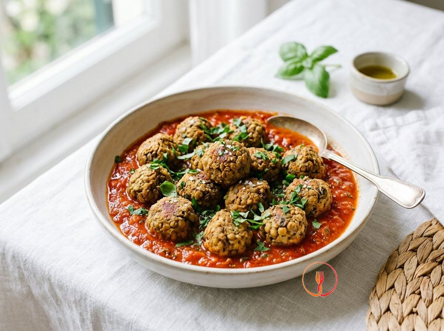
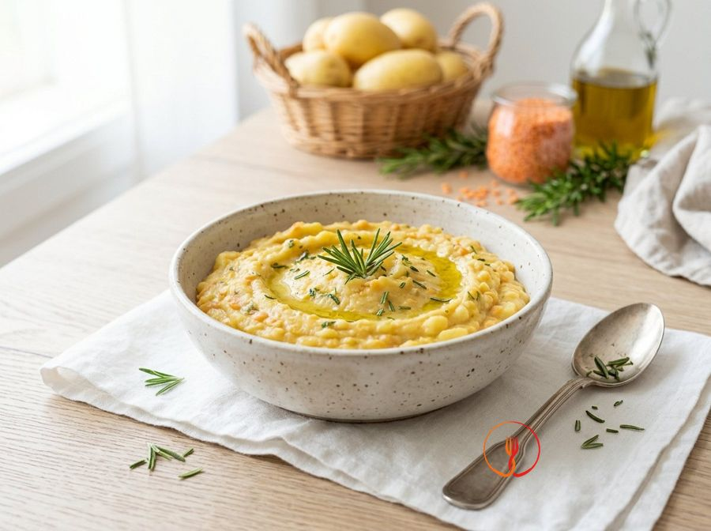
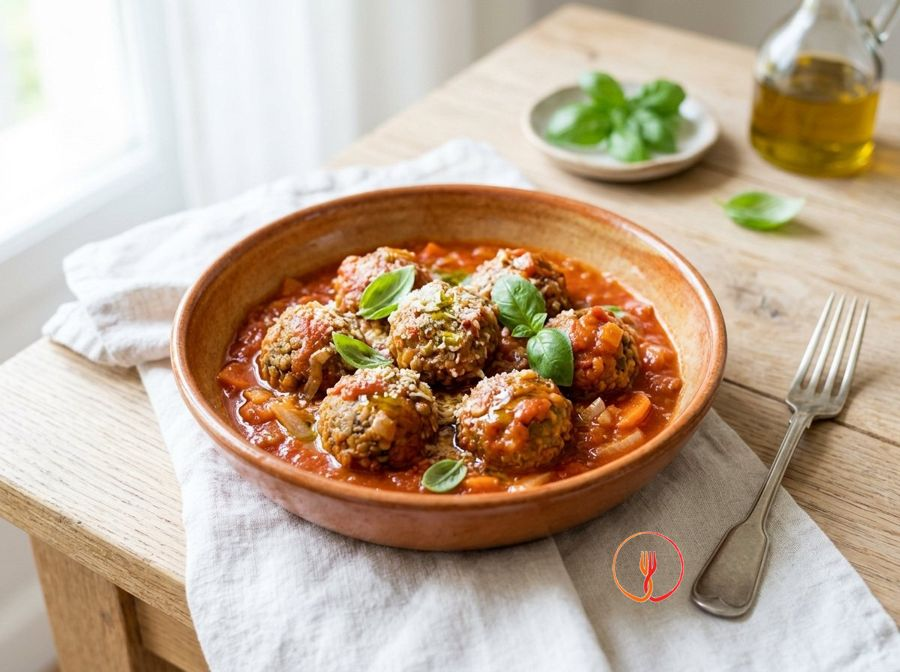

Polpette di Lenticchie e Funghi Champignon
Alternative vegetali alle classiche polpette, queste sono economiche e ricche di sapore 'umami' grazie ai funghi. Perfette da servire con una semplice salsa di pomodoro.
Ingredienti
- Lenticchie cotte (lattina)400 g
- Funghi champignon300 g
- Pangrattato80 g
- Aglio1 spicchio
- Uovo1 pz
- Olio extravergine d'oliva30 ml
- Timo secco1 cucchiaino
Allergeni
Uova, Glutine
Procedimento
- Pulisci i funghi e tagliali a pezzetti piccoli, poi saltali in padella con aglio e un filo d'olio per 10 minuti finché non perdono l'acqua.
- Scola bene le lenticchie e sciacquale sotto l'acqua corrente, lasciandole sgocciolare per qualche minuto.
- In un mixer, frulla grossolanamente metà delle lenticchie e i funghi cotti per creare una base legante ma non troppo liscia.
- Trasferisci il trito in una ciotola, aggiungi le lenticchie intere rimaste, l'uovo, il timo e il pangrattato un po' alla volta.
- Impasta con le mani fino a ottenere una consistenza modellabile; se troppo umido, aggiungi altro pangrattato.
- Forma delle palline grandi come una noce (circa 20-24 pezzi) e passale leggermente nel pangrattato rimasto.
- Disponi le polpette su una teglia con carta forno, spennellale con un filo d'olio e inforna a 200°C per 20 minuti.
- Gira le polpette a metà cottura per garantire una doratura uniforme su tutti i lati.
Valori nutrizionali (stima)
| Per porzione (216 g) | Per 100 g | |
|---|---|---|
| Energia | 1213 kJ / 290.0 kcal | 561.6 kJ / 134.3 kcal |
| Proteine | 15.0 g | 6.9 g |
| Carboidrati | 32.0 g | 14.8 g |
| di cui zuccheri | – g | – g |
| Grassi | 11.0 g | 5.1 g |
| di cui saturi | – g | – g |
| Fibre | – g | – g |
| Sale | – g | – g |
Valori stimati con l'AI su dati medi CREA / USDA: sono indicativi e non sostituiscono il parere di un medico o di un nutrizionista.
Apri la ricetta nell'app per la lista della spesa, le schede ingredienti e i negozi vicini.
Ricette correlate
 40 minBurger di Lenticchie Rosse e ZucchineAdatto ai bambini💰 Salva Euro
40 minBurger di Lenticchie Rosse e ZucchineAdatto ai bambini💰 Salva Euro
35 minMorbidi di Lenticchie Rosse e Patate al RosmarinoAdatto ai bambini💰 Salva Euro 40 minLenticchie baby al pomodoro e timoAdatto ai bambini💰 Salva Euro
40 minLenticchie baby al pomodoro e timoAdatto ai bambini💰 Salva Euro
55 minPolpette di lenticchie al pomodoro💰 Salva Euro